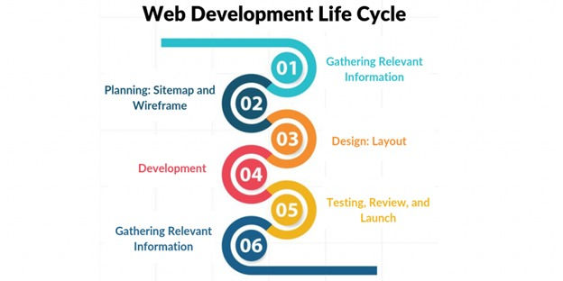

The Web Development Cycle

The Web Development Cycle includes eight main steps: gathering information, planning, writing content, designing, developing, testing, launching, and maintaining the website. These allow each web developer to easily design a website that their client approves of by breaking down each part of the website creation process.
The order of some of these steps may change based on the developer, or a developer may combine multiple steps into one. However, the web design process becomes less complicated the more steps it is broken down into, so eight main steps are suggested.